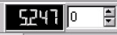

Before using Google Earth Enterprise Fusion, review the content of this chapter, which explains concepts and components fundamental to the software.
To launch the Google Earth Enterprise Fusion GUI, open a terminal window, and enter fusion at the prompt. When the applications starts, the Google Earth Enterprise Fusion GUI appears.
Google Earth Enterprise Fusion integrates the Google Earth patent-pending software with your source data--imagery, terrain, vector, even your own comma-separated (.csv) data. Using the Google Earth Enterprise Fusion GUI, you can import source data, configure the display of data, and publish your work to a Google Earth server.
If you prefer, you can perform many of these steps from the command line. For complete information about how to perform these steps from the command line, see the Command Line Reference chapter.
The Google Earth Enterprise Fusion GUI provides a multi-paned workspace that allows you to manage assets and the process of building a publishable database. You can also use the GUI to view the internal data fields for vector files and additional data that you enter for your assets.
The Google Earth Enterprise Fusion GUI provides three data preview panes:
You can show or hide the Preview List and Attribute Table panes individually.
You can also dock the Preview List and Attribute Table panes to any side of the main window or position them on your desktop as independent windows. To move a pane, grab the docking handle on the top or left side of the pane with your mouse and drag it to its new location.
Use the close boxes (X) at the top of the Preview List or Attribute Tables to hide them. The remaining panes fill the GUI.
When each pane is redisplayed, it appears in the same position it was in when it was hidden.
You can customize these panes to suit your preferences and make the best use of available screen space. If you exit Google Earth Enterprise Fusion and later restart it, the GUI configuration is the same as it was when you exited.
When working with the Preview pane, it is common to close the Attribute Table to allow more space for the imagery display. However, when working with vector data, you can set a preference to automatically display the Attribute Table when vector features are selected. To do so, select Auto-Show Selected Data in the Attribute Table section of the Preferences dialog.
See Setting Your Preferences in the Setting Up Your Workspace chapter for more information.

The menu bar provides options from six menus. The menus and their options are:
See the Configuring Display Rules section of the Defining Projects chapter for more information.

The toolbar provides quick access to the most common Google Earth Enterprise Fusion actions. The toolbar buttons and their actions are:

|
Open File - Open a source file in the Preview pane.Click this icon, navigate to and select the source you want to view, and click Open. The source appears in the Preview List pane. See the Supported Source File Formats section of the Defining Resources chapter for details. |

|
Select - Select a region of the image in the Preview pane. Select the resource in the preview list pane, and select this icon; then click and drag the mouse to highlight a region in the Preview pane. The Preview pane highlights everything you touch in the selected resource (even if you only touch a corner of it) and displays the data for the highlighted features in the Attribute Table. If you are previewing multiple resources, you can select a region in each resource, and then toggle between them to compare their data in the Attribute Table. |

|
Zoom Box - Outline the zoom area of the imagery displayed in the Preview pane to select precisely the region you want to view. Select (highlight) an item in the Preview List pane, select this icon, and then click and drag a rectangle around the region you want to view. The contents of the selected region replaces the previous view. Press Ctrl+r to return to the default view. |

|
Zoom Drag - Zoom in or out on the Preview pane.Select this icon and then:
|

|
Pan - Move the imagery around in the Preview pane.Select this icon and then click and drag the view to pan in any direction. Press Ctrl+r to return to the default view. |

|
Toggle Tile Grid - Toggle between showing and hiding the tile grid.Select this icon to turn on the grid; unselect it to turn it off. |

|
Display Level - The current display level; also referred to as LOD - level of detail. The general display level for:
|

|
Display Level Offset - Set the value added to or subtracted from the display level set in the data to a whole number between -5 and +5. See Adjusting Vector Data Display Levels for details. Select the value and enter a new one, or use the up and down arrow keys to change the value. Press Ctrl+r to return to the default view. |

|
Favorites Menu - Quickly return to a saved location. See the next section, Adding and Managing Favorites for details. |
| Preview Projection - choose between preview of Mercator and Flat projections |
In addition, you can:
After you find a favorite location, you can add it to the Favorites menu, so you can find that location again quickly.

Note: The Favorites menu in Google Earth Enterprise Fusion is unrelated to placemarks in Google Earth EC.
After you add some locations to the Favorites menu, you can use the Favorites Manager to rename, remove, or reorder the list.

 .
. or
or
 to move it up or down.
to move it up or down.You can use the preview panes to inspect imagery, vector, or terrain data in either source data or resource form. You can also open different types of data files at the same time using the preview panes. For example, you might preview an imagery resource along with vector source data to confirm that the vector data aligns properly with the imagery data. Previewing data is a great “litmus test” of how the data will look in Google Earth EC.
Note: Although you can preview source files anytime, you must build resources before you can preview them.
Some applications for the preview panes are:
Although certain limitations apply to viewing your original raw data source files in the preview panes, you have full access to all of the preview functionality when you preview built resources. If you preview raw imagery source files, only a bounding box appears in the Preview pane. If you preview built imagery resources, the actual imagery appears in the Preview pane. The following limitations apply to previewing data:
. The Open dialog appears.

You can set the File type selector to display only files of a particular format, such as ESRI Shape files, or you can display all files in each folder.
Notes: Encoding applies only to vector data. For example, the geonames-cities500000.csv vector source file provided with your Google Earth Enterprise Fusion tutorial installation uses UTF-8 character encoding. To see the data from specially-encoded files such as this, specify the correct encoding.
If you do not specify the correct encoding type for such files, special characters might not display properly. For example, with default character encoding specified, é appears as .

This action displays the data in the Preview pane; however, you might not see it, if your current display level is too high or too low.

This action resets the view to encompass the entire area of the data layer.
Note: If the data in the layer extends off of one side of the picture of the Earth and onto the other side, sometimes using the Zoom to Layer feature does not look like it zoomed in at all. That is because the preview must include both sides of the picture of the Earth.
Note: You must build resources before you can preview them.
After you open a layer in the Preview List pane, you can right-click its name, and select any of the following options from the context menu:
Allows you to reset the Preview pane to the entire selected layer. For example, if the Preview pane is displaying a portion of the layer, selecting Zoom to Layer causes the Preview pane to zoom out to display the entire layer. Likewise, if the Preview pane is displaying an area larger than the data in the selected layer, selecting Zoom to Layer causes the Preview pane to zoom in to display the area covered in the selected layer.
Allows you to specify the display properties for vector source data and resources. See Configuring Display Rules in the Defining Projects chapter for details.
Note: This option applies to vector source data and resources only, since the display rules for imagery or terrain data are set when you import the source data as a resource. Although you can actually set display rules for imagery and terrain source data, the preview of that data appears as an outline. Any display rule configurations applied to imagery or terrain data in the Preview pane affect only the outline of the image. See the next section, Previewing Imagery and Terrain Source Data for more information.
Allows you to save display rules as template files and reapply them to other layers. See the sections on Exporting Display Rules and Importing Display Rules in the Defining Projects chapter for more information.
Allows you to remove individual layers or all layers from the preview panes.
Note: Removing layers from the preview panes does not delete the data source files or the resource. It simply removes them from the preview.
When you preview terrain or imagery source data, you view only the boundaries of the data, not the imagery itself, in the Preview pane. In order to see the full imagery or terrain data in the Preview pane, you must create a resource from the source data and build the resource.
Note: Google Earth Enterprise supports preview of both Mercator and Flat Projection imagery. When previewing imported imagery resources, make sure the desired Preview Projection is selected in the toolbar.
When you open imagery or terrain source data in the Preview pane, Google Earth Enterprise Fusion draws a bounding box for the imagery. The bounding box is the outermost region of the image data.

When you open imagery or terrain resources in the Preview pane, the full imagery is displayed within the bounding box.

You can use the tile grid toggle button
to turn on the tile grid, so you can examine the tiling of imagery data, as well as the resolution levels and geospatial boundaries of imagery insets.
Although it is easy to visually determine at which display level a vector resource appears or changes, it is not always apparent with imagery insets. When you click the tile grid toggle button, a grid in a contrasting color overlays the current view. As you zoom in or out of this view and move through various levels, the grid updates its size and changes color to provide information about the imagery.
Google Earth Enterprise Fusion provides 24 display levels. When you turn on the grid, at level 0, there is only one tile, or grid square (256 pixels x 256 pixels) for the entire Earth. The number of tiles displayed quadruples at each display level.
When you use the Zoom to Layer feature, all of the grid squares are the same color. This is the lowest display level number (the highest elevation) at which you can view the full extents of the inset. In the following examples, consider Zoom To Layer the starting point.

If you zoom out from the starting point, the grid squares change color, indicating areas of different resolution in the imagery. In the following example, the blue grid squares indicate high-resolution imagery, and the pink squares indicate lower-resolution imagery.
Note: The blue grid squares do not indicate the boundaries of the high-resolution imagery. Any grid square that touches any part of the high-resolution imagery appears in blue. The bounding box indicates the actual boundaries of the high-resolution imagery.
If you zoom in from the starting point, the grid squares are all the same color, are larger, and there are fewer of them in the Preview pane until you get to the next level. Then they appear smaller and are more numerous again.


Note: All references to the grid refer to the semi-transparent lines, not the thin solid lines that designate the borders of the grid squares.
You can use the texture viewing features on the View menu to control the display of imagery and terrain data when you want to debug data in the Preview pane. Using these features, you can:
Turn off all textures in the Preview pane.
Turn on or off only the base texture in the Preview pane.
Cycle through four ways to view the mask for an imagery inset.
(See The Menu Bar for more information about these features.)
You can preview vector source data and resources to explore preliminary display settings, properties, and groupings for resources you are considering using in a project. Keep in mind that you cannot save the display settings you create in the Preview pane, so it is recommended that you set only the most basic display rules in Preview pane.
Tip: If you create display rules for vector data in the Preview pane, you can select Export Configuration as Template from the context menu to save and re-use those settings for an actual layer in a project. See Exporting Display Rules in the Defining Projects chapter.
You can view the internal data fields of vector resources that you can see in the Preview pane. After you select vector fields for display, you can manipulate the display of that view and see even more detailed information about specific entries.
, if it is not already selected.
The internal data for each selected element appears as a row in the Attribute Table.

While using the interactive zoom features, you might notice that vector features appear and disappear, depending on your viewing elevation. When this happens, note the number that appears in the Display Level indicator, which increases as the view gets closer to the Earth.
The value shown in the Display Level indicator corresponds to your viewing elevation in the Preview pane. Data that you import into projects can be configured to appear at a specific level--a number that you provide in the display rules for vector data. (See Configuring Display Rules in the Defining Projects chapter for details.)
You can use the Display Level indicator as an analysis tool to determine the appropriate display levels for resources. By setting the correct display level for vector data, you can prevent informational clutter in Google Earth EC.
To the right of the Display Level indicator is the Display Level Offset. You can adjust this selection to whole number values between -5 and +5. Google Earth Enterprise Fusion adds or subtracts the value in this window to the display level set in the data. You can use this feature to quickly adjust the level at which vector features are displayed in the Preview pane without having to reset the value in the display rule. When you find the optimal display level, you can reset the value in the project’s display rule.
For example, if you define a feature to be drawn at level 10, it does not appear in the Preview pane at level 9.2. However, if you set the Display Level Offset to 1, you can see the feature at level 9.2. Google Earth Enterprise Fusion adds 1 (the offset) to 9.2 (your current display level) to adjust your viewing elevation to 10.2.
The following illustration shows two examples of how you can adjust viewing elevation to display the data at a higher or lower elevation perspective.

When vector data is displayed in the Attribute Table, Google Earth Enterprise Fusion provides several options on a context menu to help you work with that data. To access the options, right-click the data in a cell in the Attribute Table, and select one of the following options from the context menu (where Column is the name of the selected column):
Reorders all data in the Attribute Table in ascending order based on the selected column. For example, for a numeric column, it reorders the data in that column from the smallest to the largest number. For a text column, it reorders the data in that column from A to Z.
Reorders all data in the Attribute Table in descending order based on the selected column. For example, for a numeric column, it reorders the data in that column from the largest to the smallest number. For a text column, it reorders the data in that column from Z to A.
Exports the values of the entire column to a comma-separated value (CSV) text file using this option.
Exports all of the data in the Attribute Table to a CSV text file.
Displays detailed information about the selected feature in the Feature Detail dialog, including all of the column attributes of the selected row, the number of vertices making up the vector feature, and the latitude and longitude of each vertex or part.

Zooms to the selected feature.
Copies the contents of the cell to the window manager’s clipboard. Then you can paste the contents of the cell into Google Earth Enterprise Fusion or another application.
Tip: For example, when you are filtering data with international characters, and you do not know how to enter those characters from your English keyboard, you can use this option to copy the string from the actual data and paste it into the filter expression.
The Asset Manager is the main tool you use in Google Earth Enterprise Fusion. You use it to import and build all of your assets in preparation for publishing your Google Earth and Google Maps databases, so it is important for you to become very familiar with it.
Caution: If you are working with multiple Google Earth Enterprise Fusion users on multiple workstations, it is important to remember that all managers on the Tools menu can be accessed by all users at the same time. If multiple users are working with the same manager at the same time, whoever saves an object last overwrites any previous versions of that object. So if you are working in a multi-user environment, be sure to coordinate with the other users to be sure you do not clobber each other’s work.
If it is likely that several people will be working in the Asset Manager at the same time, it is particularly important to ensure that no two users are working on the same asset at the same time.To access the Asset Manager, select Asset Manager from the Tools menu.

The title bar of the Asset Manager identifies the name of the host on which you started the Google Earth Enterprise Fusion GUI.
The Asset Manager’s menu bar provides two menus with the following options:
File
Window
Below the File and Window menus, a selection box provides access to three groups of toolbar buttons. The available selections are:
The Asset Manager’s toolbar provides the following icons so you can create new resources, projects, and databases. You will see only a subset of these icons at any time, depending on your Tools selection above.
 Vector Resource Vector Resource |
 Vector Project Vector Project |
 Imagery Resource Imagery Resource |
|
 Mercator Imagery Resource Mercator Imagery Resource |
 Mercator Imagery Project Mercator Imagery Project |
 Terrain Resource Terrain Resource |
 Terrain Project Terrain Project |
 Map Layer Map Layer |
 Map Project Map Project |
 Database Database |
 Map Database Map Database |
 Mercator Map Database Mercator Map Database |
Click the icon for the type of asset you want to create. The appropriate type of new asset window appears. Refer to the appropriate chapter of this Reference Guide for information on adding specific types of assets.
Note: Mercator imagery resources are different than Flat Projection imagery resources.
If you wish to use the same imagery for both an Earth database and a Mercator
Maps database, you must import and store two copies of the imagery resources.
Using google.com map base layers requires a Mercator Map database.
You can, however, share imagery resources between an Earth database and a Flat Projection
Maps database.
The Location field at the top of the Asset Manager window displays the asset root. The asset root is the main location where you store all of your Google Earth Enterprise Fusion data. Depending on how you set your preferences, the location displays as either ASSET_ROOT or as the full path to the asset root (such as /gevol/assets/).
See Setting Your Preferences in the chapter on Setting Up Your Workspace for more information about setting this preference.
Note: You cannot edit the Location field.
The asset navigation tree appears on the left side of the Asset Manager. When you first start using Google Earth Enterprise Fusion, only the asset root appears. As you add subfolders to the asset root, they appear hierarchically in the asset navigation tree. (See Organizing Assets for more information.) All of the data you create with Google Earth Enterprise Fusion is stored in subfolders of the asset root.
As you navigate through the folders in the asset navigation tree, the Location field displays the full path of the selected folder.
The right side of the window contains two tabs:
The contents of these tabs are described in the following sections.
The List tab displays the list of assets in the folder that is selected in the navigation tree on the left.

You can double-click the name of any asset on the list to display its properties in an editor, so you can modify the asset. You can double-click an asset’s current version or current state to display the Version Properties dialog for that asset. (See Debugging Asset Builds in the Building Assets chapter for more information about this dialog.)
You can click the Refresh button to the right of the Location field at any time to refresh the status of the assets displayed on the List tab.
Above the asset list are two filters:
In addition, you can display hidden assets by checking the box next to Show hidden assets. Hidden assets are those assets that you do not need to display regularly, such as assets that are incorrectly named. See Using the Asset Editors for information on how to designate assets as hidden.)
The Thumbnail tab displays a thumbnail image of each asset in the folder that is selected in the navigation tree on the left.
Note: The Thumbnail tab is useful for raster (imagery and terrain) data only.
In addition to the Type and Category filters and the Show hidden assets check box, which are available for this tab as well, this tab provides a zoom bar. You can drag the zoom bar down to enlarge the thumbnail images.

To close the Asset Manager, click the close box (X) in the top corner.
You use the asset editors (such as the Resource Editor, the Project Editor, and the Database Editor) to define and build your assets. When you finish using any of the asset editors (such as the Imagery Resource Editor used in this exercise), you can either leave it open and move it to the side or close it. Generally, if you know you have more work to do on a given asset, you leave the editor open. If you know you are done with an asset for now, you can close it and get it out of the way.
Caution: It is important to remember that you cannot delete assets after you save them. You can clean them, so they are no longer available to use in Google Earth Enterprise Fusion; however, you can never really eliminate them. See Cleaning Asset Versions in the Building Assets chapter for more information.
All of the asset editors provide menu options that allow you to perform specific tasks on the assets you are editing.
The menu options are:
File:
Edit:
When you finish composing your note, click OK.
Note: The notes appear in Google Earth Enterprise Fusion only.
You can check this option to hide assets that you do not need to display regularly, such as assets that are incorrectly named. Check it again to allow the asset to show.
Note: You can display hidden assets by checking the box next to Show hidden assets on the List Tab in the Asset Manager. See the List Tab section for more information.